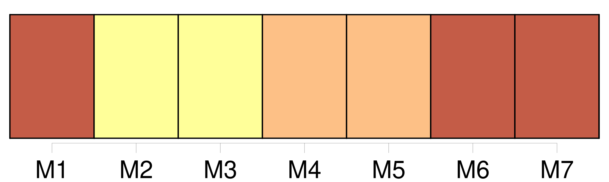
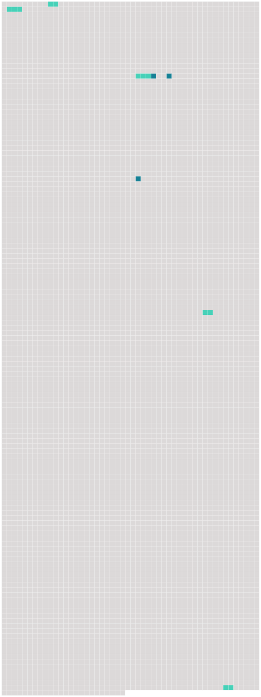

Longueur nb maillons : 8 mentions |
  |
C'est ainsi que se fit le mariage de [mes parens] [2 phrases]
C'est à St-Jean que vécut [le jeune ménage] pendant cinq années ; c'est à St-Jean que naquit Rosalie, puis une seconde fille et un premier fils qui reçurent les noms de Louise et de Juste, c'est là que Charlotte aima, pleura, sourit et souffrit. [25 phrases]
Enfin, en automne 1762, [le jeune ménage] [s'] établit chez [lui] , dans un appartement sis à la Cour de St-Pierre, et c'est là que naquit, le 3 octobre de cette année, Charles, le dernier enfant de Charlotte. [45 phrases]
Beaucoup d'années plus tard, quand Rosalie pourra revenir sans émotion sur l'événement qui la priva de sa mère, elle dira : [52 phrases] Il y réussissait si bien que, quoique nous fussions roués de coups et affamés, il fallut trois ans pour que [mes parens] fussent désabusés sur le compte de cet homme. [155 phrases] Ces demoiselles avaient retrouvé à Paris plusieurs amies de [leurs parents] MMmes de Luchet, Favre, Necker, Des Barry, Diodati, de la Richardière, MM. de Lacorbière, Tronchin, de Flavigny, etc. |
 |
La ressource peut être téléchargée sur la page Ortolang
Si vous avez des questions ou vous voyez des erreurs, merci d'envoyer un mail à silvia.federzoni89@gmail.com
Site développé par S. Federzoni (contact)